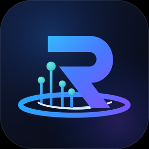
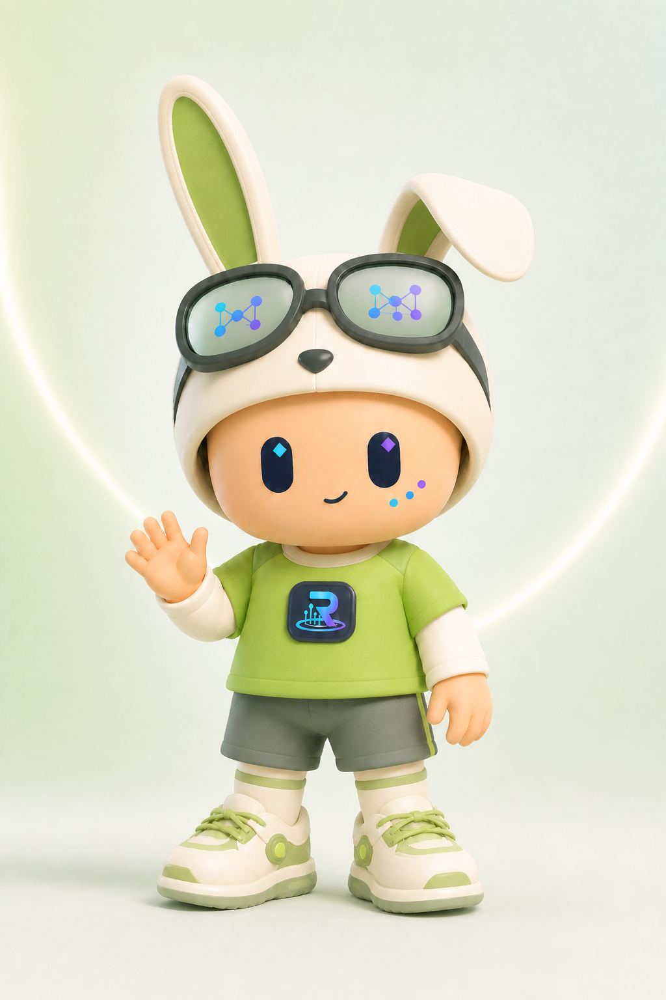
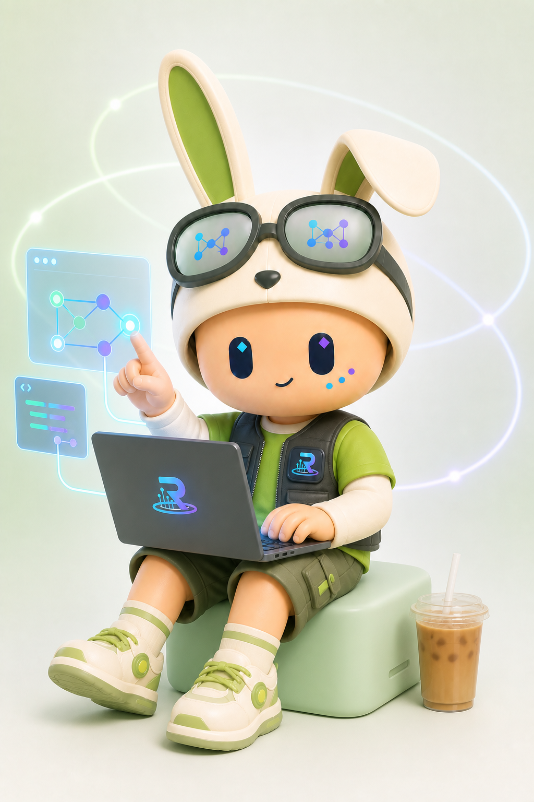
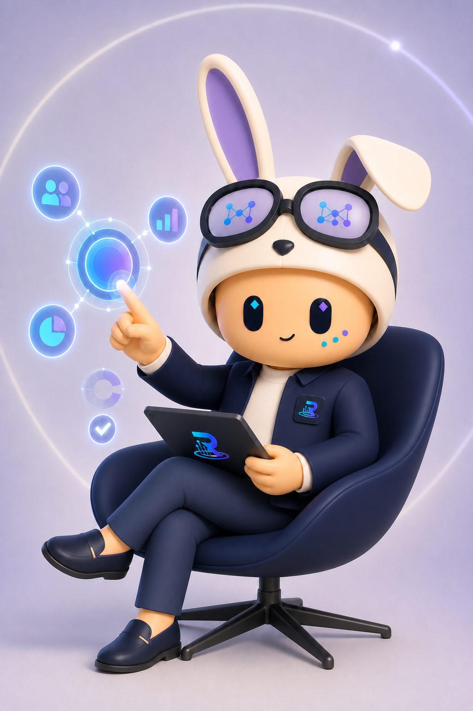
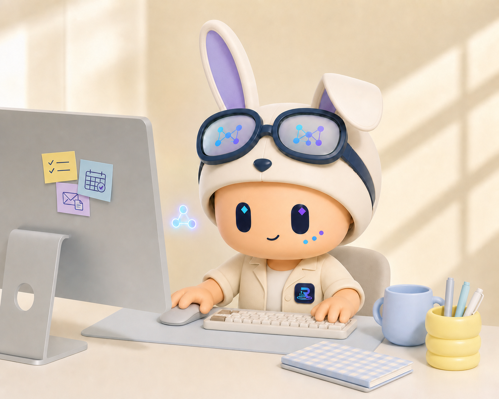
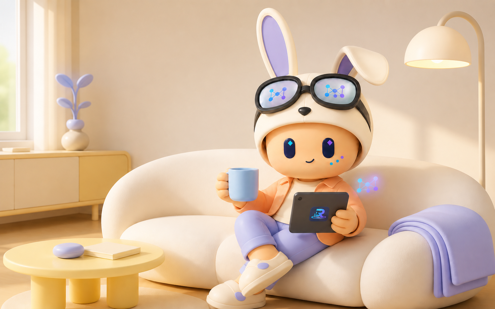
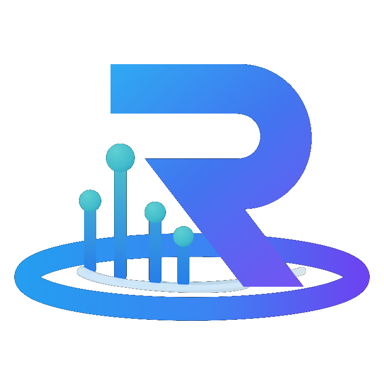

01
一竖一弯的兔耳
竖耳代表主动捕捉信息，弯耳保留柔软与亲和。

睿池 AI IP DESIGNREACHAI CHARACTER · 2026
戴着兔子帽，透过蓝紫色眼镜连接每一条思路。它不替你做决定， 但会让复杂的工作变得更清楚、更轻松。
01 / CHARACTER DNA
不是严肃的机器人，也不是遥远的虚拟偶像。圆润比例让它足够亲切， 兔帽、护目镜与三颗彩色脸颊点，则把“敏捷、连接、洞察”留在每一次出现里。

竖耳代表主动捕捉信息，弯耳保留柔软与亲和。
青、蓝、紫节点组成连接图案，表达理解、协同与编排。
两枚菱形高光保持专注感，三颗彩点成为轻量科技签名。
02 / VISUAL LANGUAGE
大头、短肢、圆角建立低距离感；品牌蓝紫只出现在眼睛、镜片图案与胸章， 让不同服装和场景依然属于同一个角色。
第一眼先看见情绪与回应。
每个姿势都直接、清楚、好读。
把 AI 的协同能力变成视觉语言。
03 / DIGITAL TWIN
从正面、侧面与背面三视图生成的睿池 AI 数字形象，保留紫色兔耳、 蓝紫眼睛与胸章识别。拖动即可旋转，滚轮或双指可以缩放查看细节。
04 / WORK MODES
身份不靠换一张脸，而是由姿态、服装与工具自然表达。 无论写代码、做决策还是处理日常事务，核心识别始终不变。




05 / AFTER WORK
一杯热饮、一台平板、一个不打扰的提醒。AI 不必占满生活， 它只是刚好在需要的时候出现。
06 / APPLICATIONS
角色可以出现在产品引导、任务反馈、办公用品与活动物料中。 统一的眼睛、兔帽与蓝紫标识，让每次出现都像同一位伙伴在回应。

07 / BRAND ATTITUDE
睿池 AI IP 不是产品旁边的装饰，而是平台性格的可视化表达： 主动理解、清晰协同，并始终把人放在决策中心。
回到最初认识它